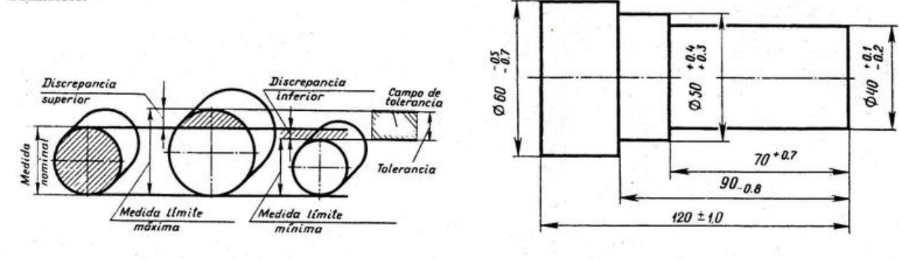
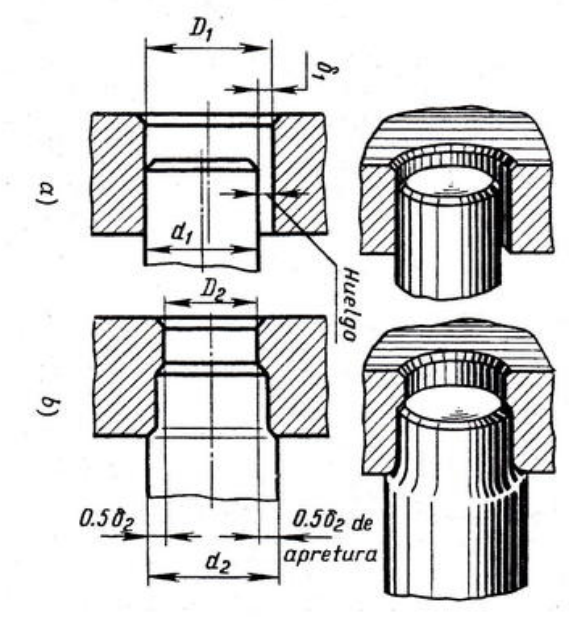
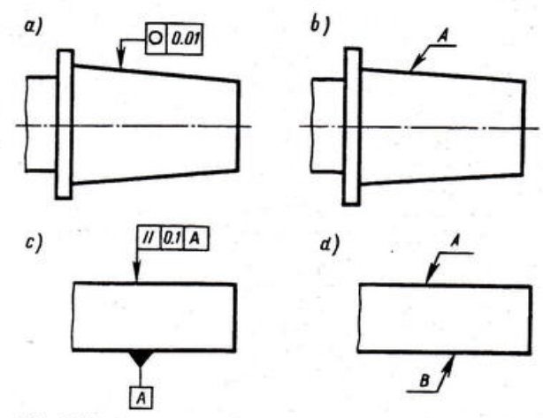
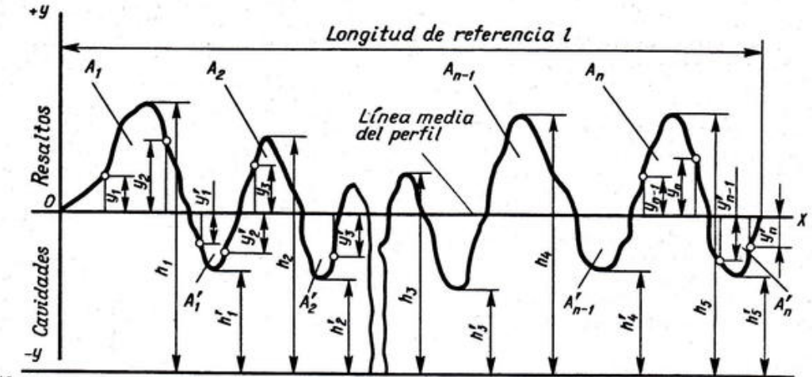
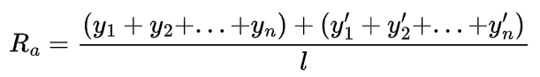
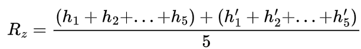
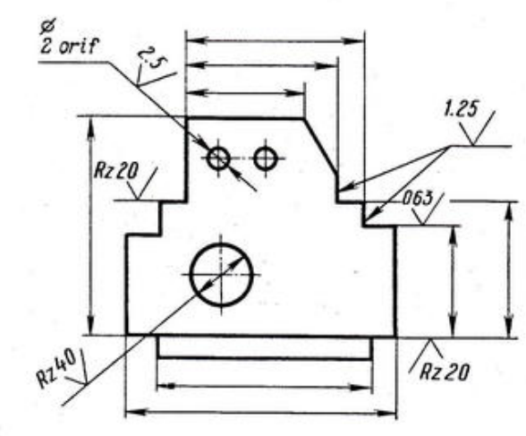
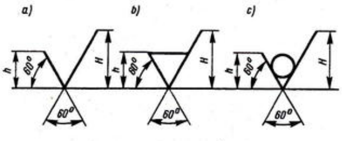
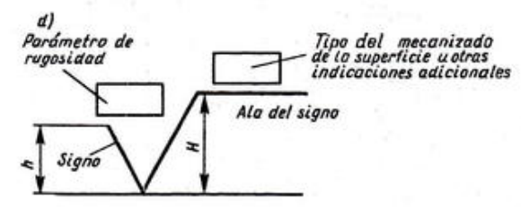

<style> .reveal section img { background:none; border:none; box-shadow:none; } #left { margin: 10px 0 15px 20px; text-align: center; float: left; z-index:-10; width:48%; font-size: 0.85em; line-height: 1.5; } #right { margin: 10px 0 15px 0; float: right; text-align: center; z-index:-10; width:48%; font-size: 0.85em; line-height: 1.5; } </style> [//]: # (Ejemplo de columnas izquierda y derecha) [//]: # () [//]: # (<div id="left">) [//]: # () [//]: # (<font size=5>) [//]: # () [//]: # (<p style='text-align: justify;'>) [//]: # () [//]: # (</p>) [//]: # (</font>) [//]: # () [//]: # (</div>) [//]: # () [//]: # (<div id="right">) [//]: # () [//]: # () [//]: # (</div>) ## Tolerancias y acabado superficial <span style="font-size: 20.0pt; "> **Profesor:** Ing. Israel Chaves Arbaiza </span> <span style="font-size: 20.0pt;"> **Curso**: Dibujo II </span> <img align="left" width="350" height="200" src="media/logo-ucr.png"> <img align="right" width="350" height="80" src="media/logoEIM.png"> --- ## Tolerancias <span style="font-size: 20.0pt; "> Al manufacturar una pieza, incluso con máquinas de precisión, pueden existir pequeñas desviaciones de las dimensiones dadas. Para evitar inconvenientes cuando se ensamblan, es necesario incluir tolerancias, rangos aceptados a las medidas. <div style="text-align: center;">  </div> </span> --- ## Tolerancias <span style="font-size: 20.0pt; "> * **Tolerancia simétrica:** Se designa con un $\pm$, y quiere decir que de la cota indicada, se tolera un máximo y mínimo iguales de desviación * **Tolerancia asimétrica:** Se designan por separado, en la cota, arriba con un **+** la desviación máxima, y con un - la desviación mínima. Si sólo se indica uno de los 2, es porque sólo esa desviación se toelra. <div style="text-align: center;"> </div> </span> --- ## Tolerancias <span style="font-size: 20.0pt; "> <div style="text-align: center;">  </div> </span> --- ## Tolerancias <span style="font-size: 20.0pt; "> * a) Se designa una tolerancia máxima del diámetro de máximo 0.01 mm * c) El símbolo || implica la desviación máxima del paralelismo entre dos superficies. En este caso se permite una desviación de 0.1 mm * Los casos b) y d) se utilizan cuando se indica una nota en otro documento (usualmente los requisitos técnicos) "La falta de paralelismo entre las superficies A y B no es superior a 0.1 mm" <div style="text-align: center;">  </div> </span> --- ## Rugosidades <span style="font-size: 20.0pt; "> En una superficie, existen irregularidades y cavidades, al conjunto de estas asperezas se le llama **rugosidades**. Para medirlas, se utilizan herramientas especiales llamadas **perfilómetros** <div style="text-align: center;">  </div> </span> --- ## Rugosidades <span style="font-size: 20.0pt; "> * El factor Ra se relaciona con la desviación media aritmética (de valores absolutos), de las cavidades * El factor Rz, se calcula tomando los 5 puntos más altos de la superficie y obteniendo su distancia media   --- ## Rugosidades <span style="font-size: 20.0pt; "> El parámetro Ra se designa únicamente con los números del valor; mientras que el parámetro Rz se designa usando las letras Rz y el valor numérico <div style="text-align: center;">  </div> </span> --- ## Rugosidades <span style="font-size: 20.0pt; "> * a) Este signo se emplea cuando el diseñador no indicó cómo se fabrica la superficie. * b) Se utiliza cuando la superficie se produce **por quitar material**, usando: torneado, fresado, taladrado, brochado a tracción, escariado, rectificado, etc. * c) Si la rugosidad de la superficie se produce **sin quitar material**, como con: colado, forjado, estampado a presión, laminado, estirado, etc. <div style="text-align: center;">  </div> </span> --- ## Rugosidades <span style="font-size: 20.0pt; "> * d) Este signo se emplea para especificar otros procesos de mecanizados y detalles específicos. <div style="text-align: center;">  </div> </span>